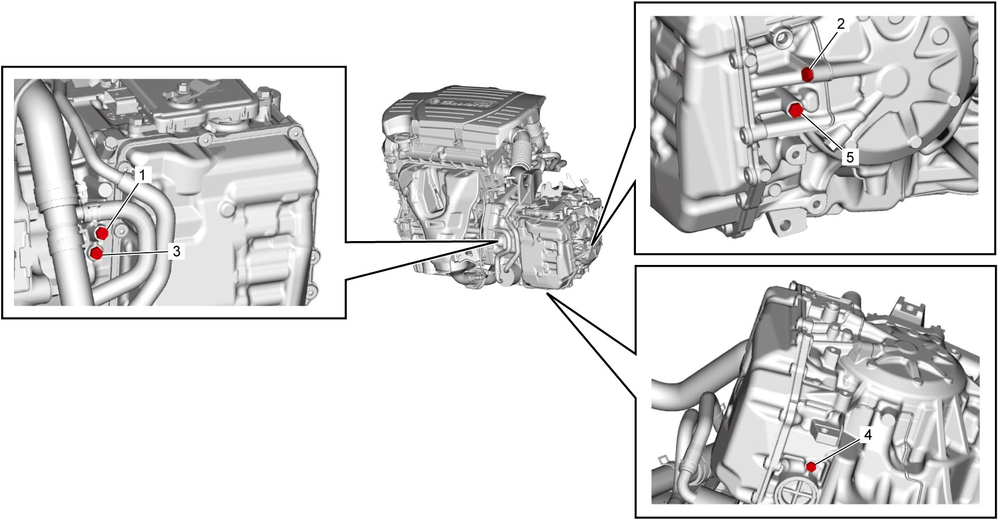
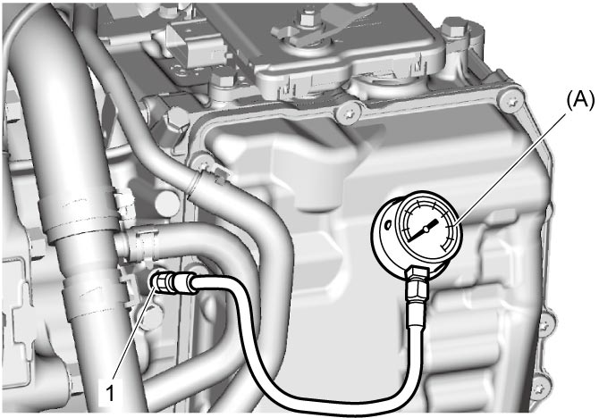
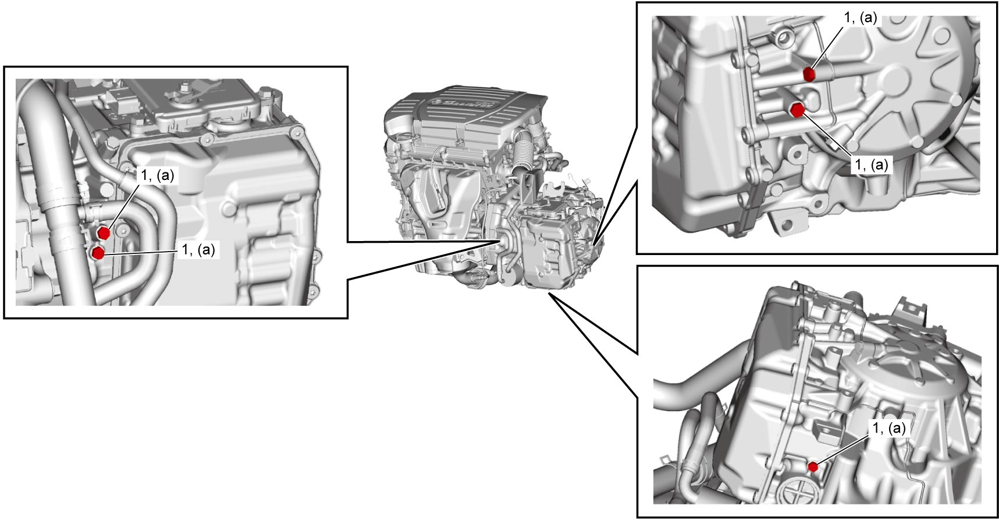

5A
| Line Pressure Test |
Purpose of this test is to check operating conditions of each part by measuring fluid pressure in fluid pressure line.
Line pressure test requires the following conditions.
•ATF is replenished to proper level.
•A/C OFF
•A/C OFF
1)Connect SUZUKI scan tool to DLC.
2)Select “Data list” mode on scan tool.
3)Drive vehicle so that ATF temperature reaches normal operating temperature (50 to 80 °C (122 to 176 °F)). 
NOTE:
Engine coolant temperature rises when revving engine in P or N range, but ATF temperature does not rise in P or N range.
Drive vehicle to raise ATF temperature.
4)Hoist vehicle.
5)Remove applicable fluid pressure check hole bolt.

NOTE:
•Do not remove two or more bolts at the same time.
•Before removing fluid check hole bolt, protect vehicle from dripping oil.
•Before removing fluid check hole bolt, protect vehicle from dripping oil.

 "Expand image")
| 1. | Forward clutch (C1) | 3. | Reverse clutch (C3) | 5. | 1st and reverse brake (B2) |
| 2. | Direct clutch (C2) | 4. | B1 brake (B1) |
6)Attach oil pressure gauge to applicable fluid pressure check hole (1).
NOTE:
After attaching oil pressure gauge, check that no fluid leakage exists.

 "Expand image")
7)Start engine and run it at idle speed.
8)Check fluid pressure according to the following table.
NOTE:
Repeat test 3 times and take average of those data.
A/T line pressure
| Fluid pressure check hole | A/T line pressure | Condition |
|---|---|---|
| C1 | 180 – 420 kPa (1.9 – 4.2 kgf/cm2, 27 – 60 psi, 1.8 – 4.2 bar) | At idle speed in D range |
| 116 kPa (1.2 kgf/cm2, 17 psi, 1.2 bar) or more | During engine auto stop and start control (ENG A-STOP model) | |
| C2 | 250 – 550 kPa (2.6 – 5.6 kgf/cm2, 37 – 79 psi, 2.5 – 5.5 bar) | Accelerator pedal: Released Gear position: 4th Select lever: D range |
| C3 | 250 – 550 kPa (2.6 – 5.6 kgf/cm2, 37 – 79 psi, 2.5 – 5.5 bar) | Accelerator pedal: Released Gear position: 3rd Select lever: D range |
| B1 | 250 – 550 kPa (2.6 – 5.6 kgf/cm2, 37 – 79 psi, 2.5 – 5.5 bar) | Accelerator pedal: Released Gear position: 2nd Select lever: D range |
| B2 | 370 – 550 kPa (3.8 – 5.6 kgf/cm2, 54 – 79 psi, 3.7 – 5.5 bar) | At idle speed in R range |
9)Stop engine and disconnect special tool.
10)After applying ATF to new O-ring, fit it to fluid pressure check hole bolt (1). Then install fluid pressure check hole bolt by tightening it to specified torque.

 "Expand image")
11)Replenish ATF, if necessary.
Troubleshooting
| Condition | Possible Cause | Action |
|---|---|---|
|
Higher than standard level in each range
|
Malfunction of pressure control solenoid valve (Low line pressure)
|
|
|
Faulty valve body component
|
||
|
Lower than standard level in each range
|
Malfunction of pressure control solenoid valve (Low line pressure)
|
|
|
Faulty valve body component
|
||
|
Clogged oil strainer
|
||
|
Faulty oil pump
|
||
|
Lower than standard level only in D range
|
Faulty valve body component
|
|
|
Lower than standard level only in R range
|
Faulty valve body component
|